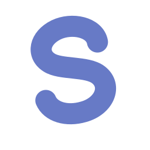

Alat refleksi untuk siswa SMP, SMA, dan SMK yang sedang harus memilih jalur. Tanpa akun, tanpa server, dan tanpa klaim bisa membaca takdirmu.
| Peserta | Muhamad Dzarel Alghifari — tim individu |
|---|---|
| Kategori | SMA/SMK |
| Kontak | WhatsApp +62 882-9320-8245 |
| Tanggal | November 2026 |
| Coba langsung | https://sei-explore.netlify.app |
|---|---|
| Kode sumber | https://github.com/DzarelDeveloper/sei |
Setiap tahun, pelajar Indonesia diminta menjawab pertanyaan besar dengan informasi yang kecil.
Siswa kelas IX SMP harus memutuskan lanjut ke SMA atau SMK. Siswa SMA kelas XII harus memilih jurusan perguruan tinggi. Yang biasanya jadi pegangan cuma kabar dari teman, harapan orang tua, atau kuis minat di media sosial yang hasilnya sebenarnya label lucu-lucuan. Sedikit sekali pelajar yang benar-benar diberi ruang untuk menguraikan minatnya sendiri sebelum keputusan itu diambil.
Di Bali masalahnya punya satu lapis tambahan. Lulusan SMK masuk ke pasar kerja pariwisata dan ekonomi kreatif yang sedang berubah digital, sementara tidak banyak yang tahu skill jembatan apa yang perlu disiapkan lebih dulu. Gejalanya sudah terlihat: angka ganti jurusan dan putus kuliah yang terus berulang, serta pekerjaan yang tidak pernah sungguh-sungguh dipilih.
Saya melihat akar masalahnya bukan pada kekurangan tes, melainkan pada kualitas alat yang tersedia. Psikotes profesional itu mahal dan berjarak. Tes bakat instan gampang dicari tapi dasarnya pseudosains. Bimbingan konseling di sekolah terbatas waktu dan jumlah siswa yang bisa didampingi. Yang belum ada adalah alat refleksi yang murah, privat, dan jujur, yaitu alat yang menolong siswa berpikir tentang dirinya tanpa mengaku bisa menentukan nasibnya.
Pengguna utama: siswa SMP, SMA, dan SMK yang sedang berdiri di titik keputusan jalur. Karena saya sendiri pelajar SMA/SMK, kelompok yang paling dekat dengan saya adalah siswa SMP kelas IX yang sebentar lagi memilih lanjut ke SMA atau SMK, dan teman-teman kelas XII yang harus menentukan jurusan. Pengguna kedua: orang tua atau wali yang menemani percakapan itu dan butuh bahan diskusi yang netral, bukan hasil yang terasa vonis.
Tiga hal yang paling sering mereka rasakan:
Alatnya dipakai di ponsel atau laptop pribadi, berbahasa Indonesia santai, tanpa daftar akun, dan boleh diulang kapan saja karena pikiran manusia memang berubah. Tidak ada ujian ulang atau label yang menempel permanen; yang ada cuma refleksi yang boleh dilanjutkan besok.
SEI adalah aplikasi web yang jalan sepenuhnya di browser, tanpa akun dan tanpa backend, yang mengubah "tes minat" menjadi rangkaian refleksi kecil yang nyambung satu sama lain. Alurnya: pilih level dan jalur, lalu halaman pengantar yang berisi kontrak kejujuran soal apa yang bisa dan tidak bisa dilakukan alat ini, dilanjutkan asesmen campuran soal skala, pilihan, dan esai singkat. Jawaban esai kemudian dijabarkan jadi sintesis kecenderungan, dan hasilnya ditampilkan sebagai skor pada lima bidang, yaitu software, jaringan, desain, sains, dan elektronika, plus rekomendasi bertingkat. Setelah itu siswa bisa menjelajah tiap bidang lewat kurikulum mini dan ide proyek, membandingkan jalur SMA, SMK, kerja, dan kuliah, lalu menutup dengan langkah berikutnya yang konkret.
Satu keputusan desain yang paling menentukan bentuk produk ini: SEI tidak pernah menyimpulkan "kamu harus masuk jurusan X". Yang keluar adalah skor kecenderungan, beberapa alternatif, dan alasan yang boleh dibantah. Arah tetap milik siswa.
SEI punya dua mode, dan keduanya saya nyatakan jujur di antarmuka sejak awal.
| Mode default (rule-based) | Mode AI (BYOK) | |
|---|---|---|
| Skoring | rumus bobot dijalankan di browser | sama persis; AI tidak pernah menyentuh skor |
| Soal | bank soal statis | LLM menyusun 3 soal esai personal dari profil, jalur, dan catatan pengguna |
| Analisis esai | ringkasan heuristik | LLM membaca jawaban esai lalu menulis sintesis kecenderungan berbahasa natural |
| Halaman hasil | kartu hasil aturan | /hasil/ai narasi rekomendasi jurusan atau pasar kerja, strategi belajar, dan pertanyaan refleksi |
Model dan jalur API. Pengguna menempelkan API key miliknya sendiri, dan provider dipilih otomatis dari prefiks key: OpenAI GPT-4o-mini, Anthropic Claude 3.5 Haiku, Google Gemini Flash, Groq Llama 3.3 70B, atau OpenRouter. Permintaan dikirim langsung dari browser (src/services/aiClient.ts) tanpa server perantara milik saya. Response diwajibkan berbentuk JSON, divalidasi terhadap skema, dibaca secara defensif, dan diberi retry dengan backoff; kalau gagal, yang muncul pesan berbahasa Indonesia yang menjelaskan, bukan layar kosong.
Kenapa AI bukan tempelan. Esai siswa berisi kalimat bebas yang sering tidak rapi: campuran curhat, daftar hobi, dan alasan yang belum matang. Mengubah bahasa semacam itu jadi ringkasan yang enak dibaca sulit dilakukan aturan tetap; heuristik bisa meniru bentuknya, tapi kualitas bahasanya jelas beda. Di titik inilah LLM jadi bagian material solusi. Sebaliknya, skoring saya biarkan tetap berupa rumus di browser supaya hasil bisa diperiksa ulang dan tidak ada kemungkinan AI mengubah angka diam-diam.
Privasi dan batasan. Key hanya dikirim ke provider yang pengguna pilih sendiri. Tidak ada data yang berangkat kalau mode AI tidak dinyalakan. Rekomendasi LLM tidak saya klaim valid secara psikometrik, dan antarmuka selalu menandai bagian mana yang hasil aturan dan mana yang hasil AI.
Semua ini sudah jalan di https://sei-explore.netlify.app dan bisa langsung dites tanpa login.
/hasil/ai, pengaturan BYOK dengan tombol tes koneksi, dan fallback pesan error yang ramah.User (browser, HP atau laptop)
└─ React 18 + TypeScript SPA (Vite 6, React Router 6) ← hosting Netlify
├─ Context state (progres, pengaturan, karakter)
├─ localStorage (satu-satunya tempat penyimpanan data)
├─ Mesin skoring & rekomendasi rule-based, jalan di browser
├─ [Mode AI] fetch langsung ke API provider LLM (BYOK, tanpa backend)
└─ response JSON → validasi skema → dirender ke halaman hasil
Tidak ada satu pun komponen server. Konsekuensinya praktis: biaya operasional nol, tidak ada database yang bisa bocor, dan aplikasi tetap berfungsi penuh kalau layanan AI sedang mati.
SEI bersaing dengan kategori alat yang berbeda, bukan dengan aplikasi yang sama.
| Psikotes berbayar | SEI gratis, tanpa janji diagnostik, dan datanya tidak pernah keluar dari perangkat. |
| Kuis minat viral | SEI memakai esai berbahasa bebas yang benar-benar dianalisis, dan tidak memaksa satu label jurusan. |
| Aplikasi karier ber-backend | SEI tidak punya backend, jadi juga tidak punya cara menyimpan jawaban siswa. |
| Buku atau panduan jalur | Jalur bisa dibandingkan berdampingan dan terhubung langsung dengan hasil refleksi pribadi, bukan bacaan umum. |
Positioning "alat refleksi, bukan tes bakat" adalah ruang yang belum diambil kompetitor, dan posisi itu juga yang membuat produk ini aman dipakai anak sekolah.
Dampak yang saya harapkan: keputusan jalur yang lebih dipikirkan, potensi salah jurusan yang berkurang, dan akses yang lebih setara bagi siswa yang tidak mampu membayar psikotes. Untuk Bali, konten jalur bisa diperkaya konteks lokal seperti vokasi pariwisata, ekonomi kreatif, dan transformasi digital UMKM, supaya saran yang muncul nyambung dengan pasar kerja sekitar.
Rencana lanjutan: paket konten per daerah, mode guru atau BK untuk pendampingan massal, ekspor hasil ke PDF, dan kalibrasi instrumen bersama psikolog atau konselor sekolah.
Keterbatasan yang saya akui apa adanya: instrumen ini belum divalidasi secara psikometrik formal, kualitas mode AI bergantung pada provider dan key milik pengguna, dan karena saya kerjakan sendiri, roadmap bergerak lebih lambat daripada tim. Saya lebih memilih menyebutkan ini di proposal daripada menjual janji yang tidak bisa saya buktikan.
React 18, TypeScript 5.7, Vite 6, dan React Router 6 (semua MIT), tanpa framework UI pihak ketiga karena styling-nya CSS kustom buatan sendiri. Font Plus Jakarta Sans dan Instrument Serif (SIL Open Font License). Hosting Netlify free tier. Layanan LLM diakses lewat API BYOK milik pengguna. Tidak ada backend dan tidak ada database. Automasi screenshot memakai Chrome DevTools Protocol lewat skrip Node.js, dengan normalisasi gambar memakai Python.
Dua hal yang saya ungkapkan sengaja: pengembangan dibantu AI coding assistant, dan SEI adalah proyek pribadi yang sudah ada sebelum lomba (open source, MIT) lalu saya sempurnakan untuk submission ini. Tabel lengkapnya ada di DISCLOSURE.md pada repository.
| Repository GitHub | https://github.com/DzarelDeveloper/sei |
| Deployment | https://sei-explore.netlify.app |
| Versi terkunci | tag annotated v1.0-submission pada commit 159838d, disertai GitHub Release di alamat yang sama |
| Akses demo | tidak perlu login; untuk mode AI, kunci demo dikirim lewat kanal resmi panitia, bukan disimpan di repository |